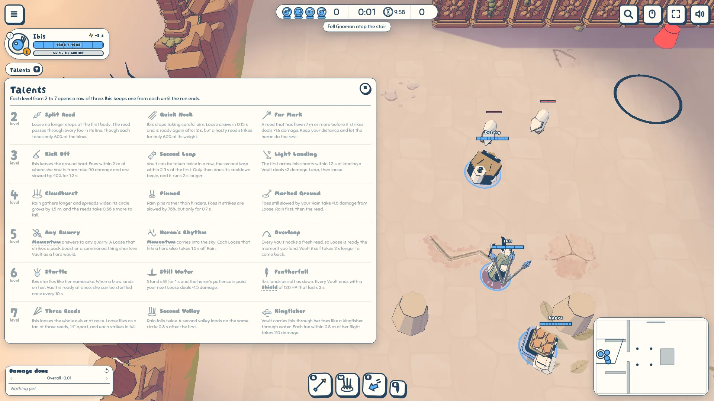
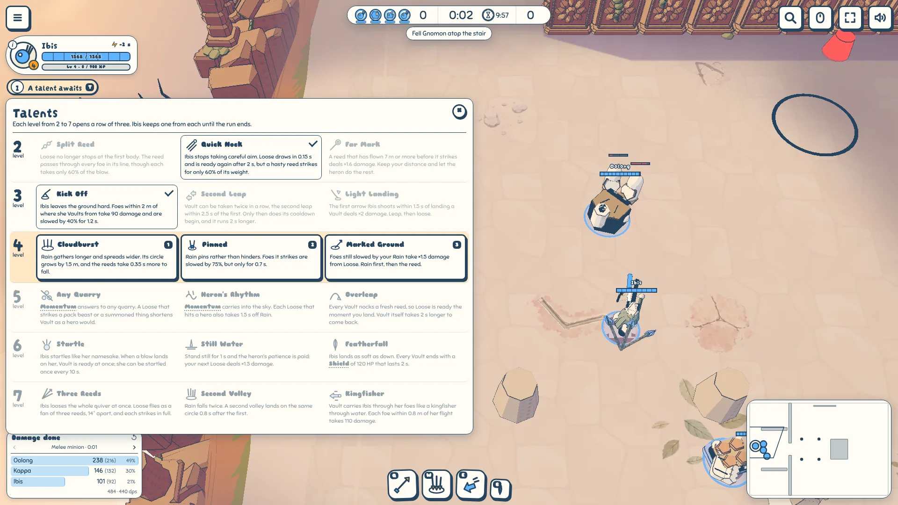
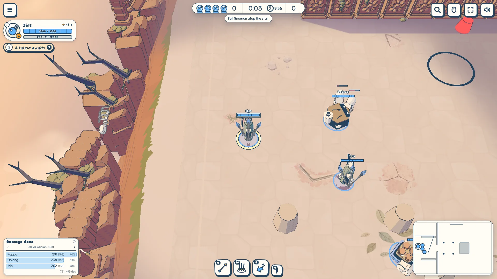
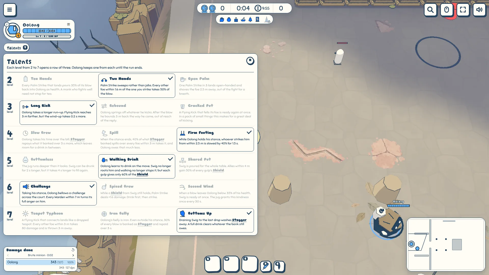

Talent trees for Ibis and Oolong
To review · 2026-10-31 · thr_aktp6exu4b
Does the tree read well, locked and unlocked? The chip under the unit frame wakes when a row opens; T (pad: d-pad up) opens the tree beside play, and 1 2 3, a click or the d-pad takes the open row's talent. Rows ahead are shown in full but quieter, the open row is framed on an apricot band, and taken rows keep the pick with a tick while the other two step back.



